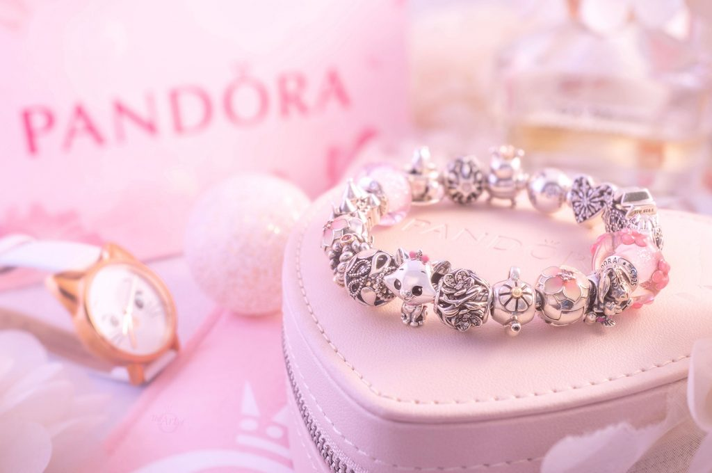

Disney 아리스토캣 참으로 오랜 고전에 대한 사랑을 간직하세요.
Disney의 토이 디자이너들과의 콜라보로 완성된 핸드 피니시드 스털링 실버 참입니다.
머리는 크고 몸은 작아 깜찍한 Disney 아리스토캣은 정교한 텍스처의 깜찍함이 돋보입니다.
다른 Disney x Pandora 주얼리들과 함께 깜찍한 룩도 완성해 보세요.

마음 속에 간직했던 Disney의 사랑스러움 가득한 공주님을 만나보세요. 핸드 피니시드 스털링 실버 참으로 공주님들의 얼굴 모양이 새겨졌으며, 손으로 채색한 반투명 컬러와 글리터들로 공주님들의 귀걸이와 목걸이, 의상과 헤어 액세서리를 생생하게 완성했습니다. 공주님들의 개성과 대표적인 룩을 영감으로 완성한 이 참은 마음 속 Disney 공주를 간직할 수 있게 하며, 어떤 일상 스타일에도 즐거움을 더해주는 디자인입니다.